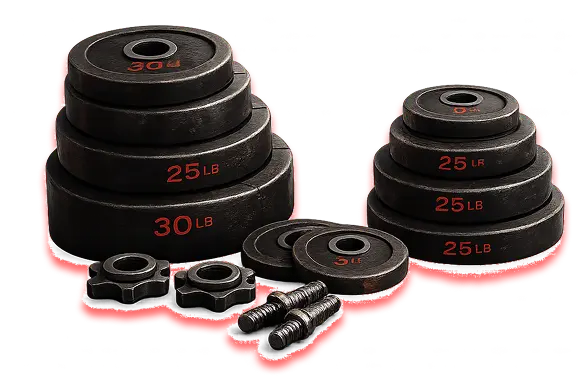

User Personas ✓
Built fictional representation of target beginner gym attendee to guide design decisions
Alex ‖ Age: 23
Actions
- Logs workouts
- Searches exercise guides
- Explores nutrient guides
Pain Points
- Poor typography
- Content layout shifting
- Exercises planning is complex
Opportunities
- Image optimisation for performance
- Responsive layout across devices
- Exercise guide videos
Goals
- View upcoming workout sessions
- Check what exercises muscles target
- Seek support with diet plans
